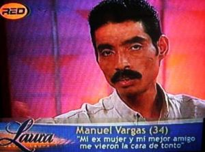

Pandilla
 De: La Frikipedia, la enciclopedia extremadamente seria.
De: La Frikipedia, la enciclopedia extremadamente seria.
| De la serie tribus urbanas del mundo:
|
| Pandilla
|
Ejemplo de la tribu
|
| El Equipo Tigre, en sus años mozos, la mejor pandilla de la historia
|
|
| Hábitat
|
lugares oscuros y malolientes, como portales
|
| Inteligencia
|
el intelectual se mantiene en una media de 4, los demás no llegan
|
| Frase favorita
|
Eh tíos hay un cadáver en el río ¿Vamos a investigar?
|
| ¿Peligroso?
|
por el día no, pero por la noche la gorda se convierte en lobo
|
| Obsesión
|
ir a la bolera
|
| Notas
|
el diablo es malo por haber sido espulsado de la Pandilla Celestial
|
Las pandillas de amigos son grupos de adolescentes que se unen para demostrar los populares que son a los marginados sociales.
¿Cómo puedo formar una pandilla?
Para formar una pandilla de amigos deben seguirse una serie de pasos plasmados en la Constitución Española que traslado aquí:
- Pedir a Dios que pida a Mr. "T" que te permita hacer una pandilla de amigos
- Si Su Divinísima Majestad acepta, esperar a que una estrella fugaz brote de su ano. Cuando esto suceda, ése será el día indicado.
- Si se es lo suficientemente patético, ponerse un nombre, como Los Águilas de Vallecas(éste no, ya está cogido).
¿Quién es digno de formar parte de mi pandilla?
Si se consigue todo esto, se debe escoger al personal que formará la pandilla. Los Águilas de Vallecas hicieron un cásting televisado, pero con dar una vuelta por el barrio se ven a los personajes menos útiles de la sociedad y, por tanto, más útiles para una pandilla:
- El líder. Áquel que crea la pandilla, que hace un pacto con Chuck Norris vendiéndole su alma a cambio de poder tener un grupito de amigos. Cuando todos están aburridos él dice: "vamos a tirar piedras a un gato" o cosas por el estilo.
- El mierdecilla. No os dejéis engañar por su nombre, es igual o más importante que el líder. Es a quién roba los jitanos, castigan los profesores, padece algun tipo de enfermedad mental no patentada, no pilla los chistes y suspende todas menos filosofía. Pero como Chuck Norris no castiga 148 veces a la misma persona, tiene gracia para contar los pocos chistes que entiende.
 manuel vargas, mierdecilla mundialmente conocido
- La tía buena. Todos creen que va a por el líder, pero en verdad se siente atraída por el mierdecilla.
- El molón. Fuma, bebe y consume, pero es buen chaval cuando tiene el mono. Incorpora palabras al vocabulario común, como "chanar","ser una púa" o "prestidigitar". Es miembro del club Zed.
- El intelectual. Inteligente y trabajador, es el que hace las cuentas de cuanto tiene que pagar cada uno cuando salen de botellón. Se siente sexualmente atraído por el fuego.
- La fea. Último mono de la pandilla, despojo de la sociedad que se enamora del primero que la saluda. Si se da el caso de que ninguno la saluda (que se da), intenta indiscretamente ligarse al líder. Suele tener problemas de retención de gases. Es vulnerable a la criptonita, como Superman.
- El gordo. Puede darse la casualidad de que sea además el intelectual (muy poco frecuente) o el mierdecilla (exageradamente frecuente). Imprescindible, es aconsejable tener más de uno en la pandilla para que se peleen por un donuts mientras los demás hacen sus apuestas. Cuando la pandilla está aburrida, el molón hace un chiste sobre gordos, y este responde diciendo que es su constitución y que podría no comer nada y seguiría igual. Si sus amigos no reaccionan ante la fría lógica, se caga en todas sus madres (literalmente). Puede ser confundido con el eslavón perdido.

gordo,a la par que mierdecilla de los Águilas de Vallecas
- El enano. No por edad, sino por estatura. También imprescindible, porque cuando no está el gordo, el molón hace un chiste sobre enanos, y este responde diciendo que su padre es muy alto y que todo está en los genes. Si sus amigos no reaccionan ante la fría lógica, pide al gordo que se cague en sus madres (literalmente). Odia la luz.
Estos son los requisitos mínimos para formar una pandilla, y no subestiméis el poder de un grupo de amigos sin nada que perder, tomad como ejemplo el equipo A, o Los Águilas de Vallecas, que se han hecho con el poder del mando de la televisión del padre del gordo, el mismísimo Ronald McDonald.
¿Qué nombres no puedo usar?
Ni se te ocurra llamarte de las siguientes formas, porque podrías recibir una paliza por patético y otra por plagio:
- "Viva Alcoyano"
- "Los chavales de la Cavallería"
- "El equipo tigre"
- "Los diablos de Vallecas"
- "Los águilas de Vallecas"
Rivalidades entre pandillas
- Los "Viva Alcoyano" dominan el este y suroeste de la península ibérica, pero son pacíficos; su líder, Bernardo de Camera Café, sólo le ha declarado la guerra a Nirvana por seguir haciendo conciertos sin Cobain.
- Los Chavales de la Caballería están en Springfield, osea que mientras no seas vecino de Homer Simpson no debes preocuparte. Su líder es Milhouse.
- El equipo tigre domina el mundo entero, aunque clandestínamente. En sus libros siempre hay dibujitos con detalles muy precisos, que más tarde te preguntan, y puedes conocer la respuesta con un descodificador que el libro trae en un sobre. Son famosos por hazañas como escapar del "Safari de los monstruos" o sobrevivir a la "Góndola espeluznante"
- Los Águilas de Vallecas se crearon el 29 de febrero del 2004, y en pocas semanas lo tenían todo: mala fama, pobreza, impotencia sexual... pero entonces llegaron los Diablos de Vallecas, que se formaron el día en que Venus y Saturno se alinearon formando un ángulo de 361 grados, para hacerles la competencia. Se odian, no se pueden de ver, de hecho el mierdecilla de los Diablos lleva tatuado a Manolito Gafotas (líder de los Águilas) a fuego en la nalga derecha.
Conclusión: si eres de Vallecas, no hagas una pandilla, porque esta ciudad no es lo suficientemente impasiva como para dejarse humillar con otra pandilla.
Citas célebres sobre pandillas
«Las pandillas son cómo una caja de bombobes»
~ Forest Gum filosofando sobre las pandillas
«Formar una pandilla se parece mucho a comerse una naranja»
~ Hans Topo explicando lo que sintió cuando fue admitido en Los águilas
«Yo tenía una pandilla, pero se me olvidó la contraseña secreta y me hecharon»
~ El diablo hablando de su corta estancia en cielo
«En mi pandilla soy el líder»
~ El hijo de Ronald McDonald inyectándose moral y algún que otro estupefaciente
Autor(es):
- Nexo
- Khazike Khashondo
- Azulejos
- Sawyer
- Veni Vidi Vici
- Kevrochi
- Boogeymante
- MasterTonight
Frikipedia 2005-2016, Licencia
GFDL 1.2 - Extraído por FrikiLeaks